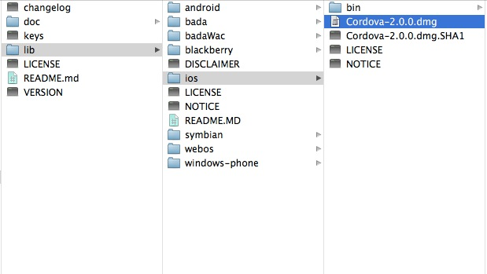
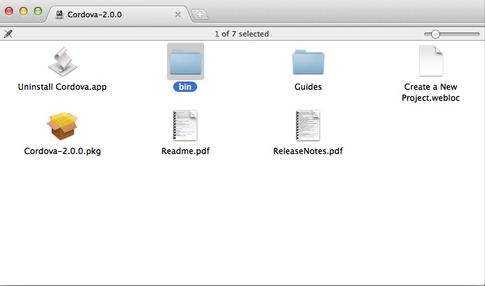
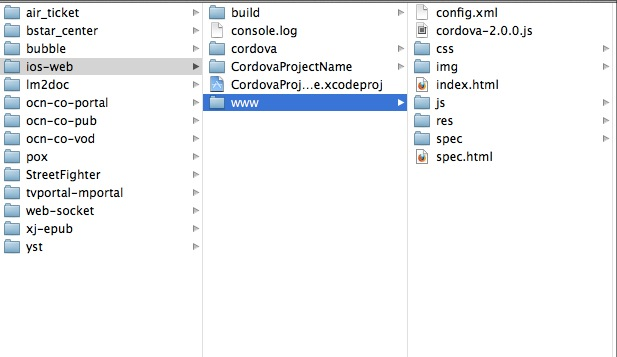
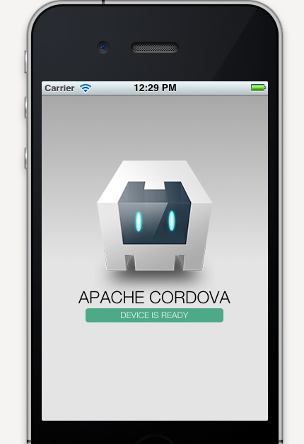

layout: post
title: 构建基于html5的app程序
tags: ios html5 js css phonegap
—
背景说明
PhoneGap是一个开源的开发框架，使用HTML，CSS和JavaScript来构建跨平台的的移动应用程序。它使开发者能够利用iPhone，Android，Palm，Symbian，Blackberry，Windows Phone和Beda智能手机的核心功能——包括地理定位，加速器，联系人，声音和振动等。
ios版流程
搭建mac环境
- 安装xcode编辑器
- 安装Xcode Command Line Tools (Xcode Preferences -> Downloads -> Components -> Command Line Tools -> Install)
- 下载最新版的Apache Cordova，下载地址：http://phonegap.com/download
- 下载完毕，解压文件如下图（当前最新为2.0.0）

双击路径为lib/ios的Cordova-2.0.0.dmg文件进行安装

（1）双击上图中的Cordova-2.0.0.pkg文件进行安装
（2）拷贝上图中bin文件夹到你的硬盘某一目录下，我拷贝到了~/Documents/config文件夹下面
构建基于html的ios程序
环境意见搭建完毕，现在开始构建项目
1: 进入终端，首先创建项目的根目录
mkdir -p ~/Documents/workspace/ios-web/
2: 构建项目
~/documents/config/bin/create ~/Documents/workspace/ios-web/ com.example.cordova_project_name CordovaProjectName
CordovaProjectName为项目名称，项目目录如下

其中www文件夹为我们html页面的根目录，构建程序已经为我们构建了一个简单的静态html项目在里面，所以暂且用这个进行调试
3: 编译项目
~/Documents/workspace/ios-web/cordova/debug
第一次编译的时候，会跳出一个因为没有ios-sim内库导致的错误，所以编译不成功
4: 三种安装ios-sim内库的方式
（1） homebrew安装
brew install ios-sim
（2）下载安装包，本地安装
curl -L https://github.com/phonegap/ios-sim/zipball/1.3 -o ios-sim-1.3.zip
unzip ios-sim-1.3.zip
（3）下载源码，本地编译
git clone git://github.com/phonegap/ios-sim.git
cd ios-sim
rake install prefix=/usr/local/
ps：我的brew配置的有问题，第一种方法报错，通过第三种办法解决的
原文路径如下：https://github.com/phonegap/ios-sim
5: 重新编译，就能看到效果了
~/Documents/workspace/ios-web/cordova/debug
效果图如下：

6: 现在开发环境已经搭好了，将开发好的html程序放在www目录下面，设置首页为index.html(当然也可以修改phonegap的配置文件来修改首页路径)，然后重新编译下就能正式发布了
参考网站